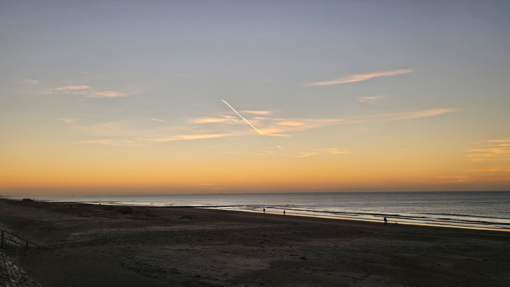
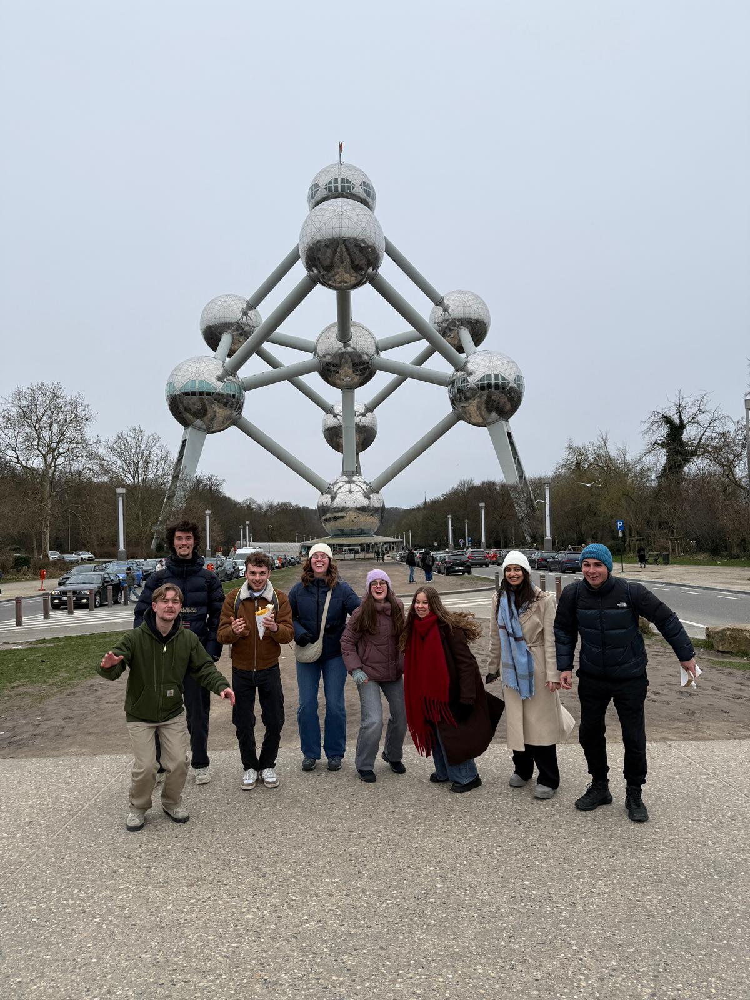
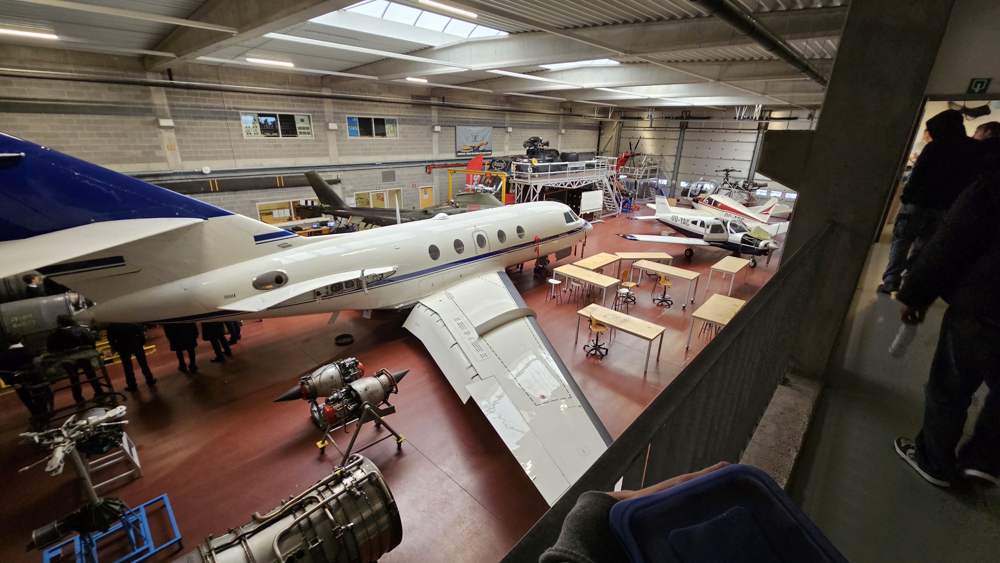

Úvod
Ahojtee!
Volám sa Richard a v roku 2026 som sa ako študent Žilinskej univerzity zúčastnil na Erasmus+ pobyte v meste Ostende v Belgicku. Tento článok má slúžiť, ako inšpirácia alebo pomocník pre ostatných študentov, ktorí zvažujú zúčastniť sa na Erasmus+ pobyte.

Ako to začalo?
Všetko to začalo v apríli minulého roku. Cca Rok dozadu. Keď po spolužiakovej správe , že si podal prihlášku na Erasmus som sa nadtým zamyslel a vyhodnotil som , že to vôbec nieje zlý nápad. Zašiel som za naším koordinátorom (človek , ktorý má na starosti Erasmus mobilitu na každej fakulte), no zistil som, že som nestihol deadline pridania prihlášok.Pretože Erasmus prihlášky sa podávajú 2-3 mesiace od skončenia semestra a nástupu na Erasmus. Ake vráťme sa späť. Zistil som , že na zimný semester 2025 to už nestihnem. Dal som si od Erasmus pauzu až do konca semestra. Všetko sa to dialo v letnom semestri 2025. Cez prázdniny som nad tým ale intezívne znova začal rozmýšlať a bol som presvedčený , že túto šancu musím využiť. Samozrejme ak sa dostanem do zoznamu študentov, ktorí môžu vycestovať. Lebo to nieje tak, že zoberie sa X študentov , podá si prihlášku a automaticky sú zaradení do programu.
Čo po lete?
Po lete som hneď na začiatku semestra , zdá sa mi , že ešte počas prázdnin som si už písal s koordinátorom. No proste hneď som to začal riešiť. Ako to prebiehalo. Na fakulnej stranke (naša fakulta ErasmusFpedas) som si vytlačil prihlášku a vyplnil. A odovzdal koordinátorovi do konca deadlineu , začiatok novembra. Všetky potrebné dokumenty ako aj zoznam partnerských škôl nájdete na stránke fakulty Erasmus+. Podla neho si vyberiete zoznam univerzít , ktoré vás oslovili a vyučujú podobne ak nie totožné predmety ako máte vy. V skratke na konci dokumentu máte tabuľku so zameraniami a k nim priradené číslo. Ak sa tot číslo zhoduje s číslom v stĺpci danej univerzity, univerzita by vám mala uznať predmety, ktoré budete študovať na zahraničnej univerzite. Nezabudnite sa pozrieť aj na jazyky v ktorom sa vyučuje a aký stupeň.(pre slovenských maturantov B2 bez dodatočných testov)
Priebeh prihlasovania a komunikácie s univerzitou
Dôležité je povedať, že môžete si dať prihlášku len na jednú školu , takže sa musíte rozhodnúť ešte pred deadinom podania prihlášky. Po podaní prihlášky sa začínajú interné procesy. Aj keď nemáte ešte garantovaú mobilitu , začínajte komunikovať s univerzitou, ktorú ste si vybrali. Nečakajte na to, že vám pošlú e-mail s informáciami o tom , čo máte robiť.
Housing
POZOR !!! Určite sa začnite hneď pri prvom kontakte s prijímacou univerzitou zaujímať o ubytovanie. Je veľmi pravdepodobné, že kapacita bude obmedzená a ak vám nevyhovovala cena alebo izba, zháňajte si vlastné ubytovanie.Všetko si najprv vykomunikujte s osobou , ktorá ma na starosti housing.
Podmienky a dokumenty
Váš koordinátor by vám to aj mal odporučiť v e-maily , ktorý vám pošle ohľadom úkonov, ktoré musíte spraviť. Počnúc kontaktu s univerzitou , ktorá vám pošle ich výber predmetov na daný semester. Vy si predmety vyberiete a pošlete vášmu nie koordinátorovy ale (u nás prodekanovi) zodpovedajúcemu za Erazmus študentov na fakulte. Podmienky úspešného absolvovania semestra si už dohodnete s univerzitou ( u nás na UNIZA je to 30 kreditov).Predmety vám musí podpísať oprávnená osoba. Nemal by som zabudnúť ani na LA-learning agreement.Je to EÚ stránka, kde vypĺňate údaje o vás , vašej škole , predmetoch atď. Je to oficiálny portál EÚ pre Erasmus študentov, niečo ako register alebo prihláška. Túto vašu prihlášku musí schváliť vaša škola a škola , ktorú ste si vybrali. Je to dôležité , pretože vám to zabezpečí uznanie predmetov a kreditov, ktoré získate počas semestra v zahraničí. Po schválení Learning agreementu a dodaní tzv. "Acceptation list", vám už nič nebráni v tom, aby ste sa pripravovali na váš pobyt v zahraničí.
Grant a zmluvy
Posledné , čo by som chcel z dokumentov spomenúť je zmluva o grante s ktorou je spojených ďalších niekoľko zmlúv. Proste byrokracia. Je to administratívna povinnosť ktorej sa nevyhnete.Po podpísaní Grant zmluvy a dodatočných zmlúv s Európskou komisiou, už len zostáva sa poistiť na obdobie mobility (pobytu v zahraničí). Späť k grantu, ten sa vyčísľuje v zhľadom na vzdialenosť , napríklad:Slovensko-Belgicko.Existuje aj kalkulačka ktorá vám vypočíta možný grant. Na tejto stránke sa dozviete viac tu . Ku grantu sa takisto pridáva aj kompenzácia za dopravné náklady.Existuje green transportation (train,bus,car sharing) a non-green transportation (plane). Pri non-green doprave dostanete o niečo menej ako pri zelenej doprave.
Na splatenie grantu má univerzita 1 mesiac od začiatku mobility, z vlastnej skúsenosti môžem povedať, že nečakajte, že vám to príde prvé dni. Takisto si ukladajte všetky doklady o doprave , aby ste mohli poslať žiadosť o kompenzáciu za dopravu.
Mobilita
Príchod
Cesta zo slovenska aj s prestupom v Prahe trvala cca. 23 hodín. Len cesta. Samozrejme som si mohol vybrať lietadlo a skrátiť si čas , ale keď sa nad tým zamyslím , finančne by som si vôbec nepomohol.Pretože aerolinky za 2 ťažké kufre účtujú skoro jeden celý autobusový lístok.
Samozrejme, môžte zvoliť aj iný tip dopravy , alebo zaplatiť za autobus a ísť lietadlom. Hlavne vždy si nezabudnite lístok uložiť ako doklad , aby vám mohli poslať peniaze za dopravu.
Prvé dni
Po nekonečnej ceste som dorazil do Brúg.Privítalo ma "krásne" zamračené počasie s mierny vietor. Kúpil som si lístok a dorazil do Ostendu.v Ostende ma už čakal spolužiak Michal, s ktorým som na mobilite. Moje prvé dojmy boli neutrálne.Škaredé počasie ale striedal pohľad na vyspelejšiu západnú Európu, ktorá sa dala rozoznať vizuálne. Hlavne infraštruktúra a doprava. Na tie bicykle si človek zvykne veľmi rýchlo:D. Všetko je tu prispôsobené pre cyklistov, čo je relatívne super . Záleží z akej strany sa na to pozeráte.
Veľmi sa nám oplatilo tu prísť trocha skôr než na začiatok semestra 2-3 dni pred. Zatial sme sa rozkukali , kde je čo , vybavili kartičky na dopravu , našli si obchody , pozreli si spoje do školy , dokonca sme stihli aj okuknúť školu... Naozaj ak máte tú príležitosť vrele odporúčam.
Hneď prvú vec, čo som si vybavoval bola kartička na dopravu.Je dobre ak po ceste tam si pozriete dopravné služby ale aj zľavy pre študentov ponúkané, na mapách poskenujete okolie (obchody,zastávky) atď. Mne pomohol môj spolužiak Michal, ktorý to mal za ten deň aj s cestou zmáknuté. Shoutout Michalovi!!
Povolenia
V Belgicku, ale aj v iých štátoch západnej Európy potrebujete mať povolenia na pobyt (v Belgicku na viac ako 3-mesiace) Dobrá správa je , že si to nemusíte vy zisťovať , ale je vám to povinný vysvetliť koordinátor z prijímacej univerzity. V mojom prípade mi to vysvetlila pani koordinátorka prijímajúcej univerzity na online meetingu ešte pred cestou. Takže, čo najskôr si vybavte potrebné povolenia , aby ste sa po začatí semestera nemuseli už tým zaoberať. Aj preto odporúčam prísť aspoň o tie dva tri dni skôr ako začína semester.
Prvá polovica semestra

Musím povedať, že belgický systém je iný ako na Slovensku.Aj v pozitívnom , aj v negatívnom zmysle. Čo sa týka mobility a grantu.Grant sme dostali 30. deň od začiatku mobility , čož bolo trocha stresujúce. Na niektorých univerzitách býva zvykom , že pred posielaním grantu volajú študentovi , či je všetko v poriadku alebo chce sa sťažovať, zrušiť.Po tom ko ti pošlú grant, platí zmluva , ktorú ste podpísali s univerzitou. Od vtedy som zatial nemal žiadne spojenie s univerzitou.Grant sa posiela v 2 častiach 80% do mesiaca a následne po mobilite 20% aj z grantom na dopravu.

budete potrebovať aj vlastné peniaze. Záleží to samozrejme na krajine do ktorej idete.Ale pripravte sa, že na západ od nás budete potrebovať viac peňazí než je len grant. Zoberte si, ako rastie trh s bývaním , nehnuteľnosťami.Toto sa odzrkadluje všade , aj v nájme. V Belgicku sa nájmy pohybujú od 400-500€ za izbu v zdieľanom byte až po 500-900€ za samostatný byt. Dajte si 2800 (grant) - 2550 (nájom)a máte sumu s ktorou by som pracoval, nemať iné zdroje. Buďte na to pripravení!Pokračovanie a koniec semestra
Počas semestra sme mali 3 týždne voľna , ktoré sme dedikovali cestovaniu po Belgicku a okolitých krajinách.Navštívili sme celkovo Gent , Bruggy , Brusel , Leuven , Maastricht , Aachen , Amsterdam , Rotterdam , Antwerpy De Panne , Knokke , Liege , Dinant , Kortrijk , Lille , Dunkirk a Mechelen. Ich vlakové stanice som si zamloval , hlavne v Antwerpách , Liege a Gente , takisto stanica v Mechelene je krásná. Všetky tieto mestá sú veľmi pekné a oplatí sa ich navštíviť.
Čo sa týka konca semestra , ten sa samozrejme niesol v skúškovom duchu. Vo Vives of university of applied sciences sme nemali žiadne zápočty cez semester. Jediné čoho sme sa museli zúčastňovať boli labáky , v hangáry alebo v lboratórnych učebniach. Prednášky boli dobrovoľné , ale pomohli dosť k pochopeniu danej témy , teda aspoň za mňa. Takže vrátim sa naspäť k labákom. Tie boli povinné ako aj práce , ktoré sme mali odovzdať do niakeho časového limitu po skončení práce. Napríjlad natočiť video o kontrole anti-ice ventilu/klapky v turbínovom motore. (Púšťa a zastavuje teply vzduch prúdiaci do tzv. inlet cowlingu , najprednejšia časť štítu/gondoly motora) atď. Taktiež sme mali deadline do 25. mája vypracovať online kurzy silná udržateľnosť a vznikajúce technológie. Kde sme sa zaoberali napríklad rôznymi formami obnoviteľnej energie (veterné farmy) alebo dronmy a ich budúcnosťou (U-space). Na tieto 4 predmety sme sa sústredily cez semester. Následne od 28.5. až do 16.6. sme mali skúšky z 5 predmetov. Spolu s labákmi , online kurzami a týmito 5-timi kurzami so skúškou som mal 30 kreditov. Skúšky boli veľmi náročné , za mňa takto intenzívne som sa ešte nikdy neučil :D. Ale naštastie sa nám to všetkým erasmákom podarilo. V Belgicku skúškový systém funguje trošku inak. Dátumy skúšok si nevyberáte ale je vám pridelený. Opravný pokus je len jeden a koná sa na konci Augusta. Takže pre nás erasmákov je to úplne super , že sa nám to podarilo na prvý pokus.
Po skúškach
Je to veľmi bežné a prirodzené , že po poslednej skúške máte ešte niaky čas kým vám skončí nájomná zmluva. Samozrejme , líšiť sa to môže , ak ste v prenájme u súkromného prenajímateľa. Tento čas sme využili na spoznávanie Rotterdamu a návštevu útrob Európskeho parlamentu v Bruseli. Takisto riešite , ako všetko napraete do toho istého kufra s ktorým ste prišli a logistické veci , ako je doprava napríklad.Samozrejme , všetky doklady je treba si archívovať na budúce zdokladovanie prepravy a vyplatenie grantu.